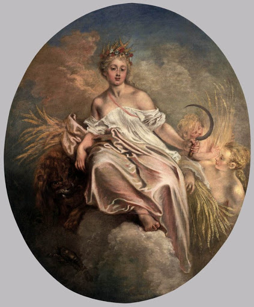

Астроид (распространённый до 2006 года синоним — малая планета) — относительно небольшое небесное тело Солнечной системы, движущееся по орбите вокруг Солнца. Астероиды значительно уступают по массе и размерам планетам, имеют неправильную форму и не имеют атмосферы, хотя при этом и у них могут быть спутники. Входят в категорию малых тел Солнечной системы.
Термин астероид (от др.-греч. ἀστεροειδής — «подобный звезде», из ἀστήρ — «звезда» и εἶδος — «вид, наружность, качество») был придуман композитором Чарлзом Бёрни и введён Уильямом Гершелем на основании того, что эти объекты при наблюдении в телескоп выглядели как точки, подобно звёздам, — в отличие от планет, которые при наблюдении в телескоп выглядят дисками. Точное определение термина «астероид» до сих пор не является установившимся. До 2006 года астероиды также называли малыми планетами.
Главный параметр, по которому проводится классификация, — размер тела. Астероидами считаются тела с диаметром более 30 м, тела меньшего размера называют метеороидами.
В 2006 году Международный астрономический союз отнёс большинство астероидов к малым телам Солнечной системы.
Пояс астероидов — область Солнечной системы, расположенная между орбитами Марса и Юпитера, являющаяся местом скопления множества объектов всевозможных размеров, преимущественно неправильной формы, называемых астероидами или малыми планетами.
Эту область также часто называют главным поясом астероидов или просто главным поясом, подчёркивая тем самым её отличие от других подобных областей скопления малых планет, таких как пояс Койпера за орбитой Нептуна, а также скопления объектов рассеянного диска или облака Оорта.
Выражение «пояс астероидов» вошло в обиход в начале 1850-х годов. Первое употребление этого термина связывают с именем Александра фон Гумбольдта и его книгой «Cosmos: A Sketch of a Physical Description of the Universe».
Суммарная масса главного пояса равна примерно 4% массы Луны, больше половины её сосредоточено в четырёх крупнейших объектах: Церера, (2) Паллада, (4) Веста и (10) Гигея. Их средний диаметр составляет более 400 км, а самый крупный из них, Церера, единственная в главном поясе карликовая планета, имеет диаметр более 950 км и вдвое превышает суммарную массу Паллады и Весты. Но большинство астероидов, которых насчитывается несколько миллионов, значительно меньше, вплоть до нескольких десятков метров. При этом астероиды настолько сильно рассеяны в данной области космического пространства, что ни один космический аппарат, пролетавший через эту область, не был повреждён ими.
Сравнение астероидов с Луной
Причина такого состава пояса астероидов в том, что он начал формироваться непосредственно вблизи Юпитера, чьё гравитационное поле постоянно вносило серьёзные возмущения в орбиты планетезималей. Получаемый от Юпитера избыток орбитальной энергии приводил к более жёстким столкновениям этих тел между собой, что препятствовало их слипанию в протопланету и её дальнейшему укрупнению.
В результате большинство планетезималей оказались раздробленными на многочисленные мелкие фрагменты, большая часть из которых либо была выброшена за пределы Солнечной системы, чем объясняется низкая плотность пояса астероидов, либо перешла на вытянутые орбиты, по которым они, попадая во внутреннюю область Солнечной системы, сталкивались с планетами земной группы; этот феномен получил название поздней тяжёлой бомбардировки.
Столкновения между астероидами случались и после этого периода, что приводило к появлению многочисленных астероидных семейств — групп тел со сходными орбитами и химическим составом, в которые входит значительное число существующих на сегодня астероидов, а также к образованию мелкой космической пыли, формирующей зодиакальный свет.
Помимо этого, гравитация Юпитера также создаёт области неустойчивых орбит, где из-за резонансов с Юпитером практически отсутствуют астероиды. Астероид, попадающий туда, за относительно короткое время будет выброшен с этой орбиты за пределы Солнечной системы или пополнит популяцию астероидов, пересекающих орбиты внутренних планет. Сейчас астероидов в таких областях практически не осталось, но орбиты многих небольших астероидов продолжают медленно изменяться под влиянием других факторов.
Главной отличительной чертой, характеризующей отдельные астероиды, является их спектр, по которому можно судить о химическом составе данного тела. В главном поясе, в зависимости от химического состава, выделено 3 основных спектральных класса астероидов: углеродные (класс C), силикатные (класс S) и металлические или железные (класс M). Все эти классы астероидов, особенно металлические, представляют интерес с точки зрения космической индустрии в целом и промышленного освоения астероидов в частности.
Влияние Юпитера на пояc
Своеобразной предысторией начала изучения пояса астероидов можно считать открытие зависимости, приблизительно описывающей расстояния планет от Солнца, получившей название правила Тициуса — Боде. Суть правила заключается в том, что расположение орбит планет Солнечной системы может быть приблизительно описано эмпирической формулой вида: ai = 0,4 + 0,3*2i-2, где i — порядковый номер планеты (при этом для Меркурия следует полагать i=-∞, а i=5 никакой известной планетe не соответствует). Впервые оно было сформулировано и опубликовано немецким физиком и математиком Иоганном Тициусом ещё в 1766 году, но несмотря на то, что ему, с указанными оговорками, удовлетворяли все шесть известных на то время планет (от Меркурия до Сатурна), правило долго не привлекало внимания. Так продолжалось до тех пор, пока в 1781 году не был открыт Уран, большая полуось орбиты которого точно соответствовала предсказанной данной формулой. После этого Иоганн Элерт Боде высказал предположение о возможности существования пятой от Солнца планеты между орбитами Марса и Юпитера, которая, согласно данному правилу, должна была находиться на расстоянии 2,8 а. е. и при этом до сих пор не была обнаружена. Открытие Цереры в январе 1801 года, причём именно на указанном расстоянии от Солнца, привело к усилению доверия к правилу Тициуса — Боде среди астрономов, которое сохранялось вплоть до открытия Нептуна.
Ученые Иоганн Даниэль Тициус и Иоганн Элерт Боде
Первым поиски планеты между Марсом и Юпитером ещё в 1787 году начал барон Франц Ксавер. Но после нескольких лет безуспешных наблюдений он понял, что нуждается в помощи других астрономов, поэтому в сентябре 1800 года он собрал группу из 24 учёных для совместных поисков планеты, образовав нечто вроде неформального клуба под названием «Общество Лилиенталя». Однако наибольшую известность эта группа получила как «Himmelspolizei», или «небесная полиция». Наиболее именитыми её членами были Уильям Гершель, Шарль Мессье и Генрих Ольберс. Они разделили зодиакальную часть неба вблизи эклиптики на 24 части (по числу астрономов), предоставив каждому зодиакальную область шириной 15° для поиска планеты. Задача состояла в описании координат всех звёзд в области зодиакальных созвездий на определённый момент. В последующие ночи проверялись координаты и выделялись объекты, которые смещались на большее расстояние. Предполагаемое смещение искомой планеты должно было составлять около 30 угловых секунд в час, что легко заметить.
Мистическая Фаэтон
Несмотря на усилия «небесной полиции», планета была случайно обнаружена человеком, который не состоял в клубе — итальянским астрономом из университета Палермо в Сицилии Джузеппе Пиацци, наблюдавшим её в ночь на 1 января 1801 года. Составляя полный каталог звёзд из созвездия Тельца, он обнаружил маленькую точку света, движущуюся на фоне звёзд. Последующие наблюдения подтвердили, что она является не звездой, а новым объектом Солнечной системы. Первоначально Пиацци принял её за комету, но отсутствие комы натолкнуло его на мысль, что этот объект может являться планетой. Она находилась на расстоянии 2,77 а. е. от Солнца, что почти точно соответствовало предсказаниям правила Тициуса — Боде. Пиацци назвал планету Церера, в честь римской богини урожая и покровительницы Сицилии. Вскоре после обнаружения объект был потерян. Но благодаря сложнейшим вычислениям, проделанным всего за несколько часов 24-летним Карлом Гауссом по новому, им же самим открытому методу (метод наименьших квадратов), ему удалось указать место, где искать беглянку, где она и была вскоре обнаружена.
Богиня Церера
Пятнадцать месяцев спустя, 28 марта 1802 года, Генрих Ольберс открыл второй крупный объект в этой же области Солнечной системы, который получил имя Паллада. Её большая полуось была примерно такой же, как у Цереры, но вот эксцентриситет и наклон, напротив, сильно отличались от аналогичных параметров Цереры. Самое главное, что оба открытых тела, в отличие от других планет, даже в самые сильные телескопы того времени выглядели как точки света, то есть разглядеть их диски не удавалось, и если бы не их быстрое движение, то они были бы неотличимы от звёзд. Поэтому 6 мая 1802 года после изучения характера и размера этих двух новых объектов Уильям Гершель предлагает классифицировать их как отдельный класс объектов, названный им «астероиды», что с греч. означает «звездоподобный». Определение намеренно было выбрано несколько неоднозначным, чтобы оно было «достаточно широким для покрытия всех возможных будущих открытий». Однако, несмотря на усилия Гершеля ввести этот новый термин, в течение нескольких десятилетий астрономы продолжали называть вновь открытые объекты «планетами». Так, Церера называлась планетой вплоть до 1860-х годов, когда она всё-таки была отнесена к классу астероидов, в котором и находилась до 2006 года, пока вместе с Плутоном и некоторыми другими транснептуновыми объектами не была переведена в разряд карликовых планет. Но по мере увеличения количества открытых астероидов система их классификации и обозначения становилась всё более громоздкой, и в начале 1850-х по предложению Александра фон Гумбольдта они были исключены из состава планет и постепенно всё чаще стали называться астероидами.
Уильям Гершель
Когда стало ясно, что, кроме Цереры, примерно на том же расстоянии от Солнца находится множество других более мелких тел, чтобы как-то объяснить это с позиции правила Тициуса — Боде, была выдвинута гипотеза, что они образовались в результате разрушения планеты Фаэтон, которая раньше находилась на этой орбите. Впоследствии эта гипотеза была опровергнута, поскольку выяснилось, что из-за гравитационного влияния Юпитера на данном расстоянии от Солнца сколь-нибудь крупное тело образоваться просто не может. С открытием же Нептуна в 1846 году правило Тициуса — Боде оказалось полностью дискредитированным в глазах учёных, поскольку большая полуось данной планеты была далека от предсказанного правилом.

Убийца Тициуса-Боде
Новый этап в изучении астероидов начался с применением в 1891 году Максом Вольфом метода астрофотографии для поиска новых астероидов. Он заключался в том, что на фотографиях с длинным периодом экспонирования астероиды оставляли короткие светлые линии, в то время как звёзды оставались точками благодаря тому, что телескоп поворачивается вслед за вращением небесной сферы. Этот метод значительно ускорил обнаружение новых астероидов по сравнению с ранее использовавшимися методами визуального наблюдения: Макс Вольф в одиночку обнаружил 248 астероидов, начиная с астероида (323) Брюсия, тогда как до него за несколько десятилетий было обнаружено немногим более 300. Первая тысяча астероидов была обнаружена уже к октябрю 1921 года, 10 000 к 1981, к 2000 году количество открытых астероидов перевалило за 100 000, а по состоянию на 6 сентября 2011 года число нумерованных астероидов составляет уже 285 075.
Известно, что пояс астероидов содержит гораздо большее их количество, чем известно сейчас (всё зависит от того, сколь малые тела можно называть астероидами). Однако, поскольку современные системы поиска новых астероидов позволяют выявлять их совершенно автоматически практически без участия человека, большинство учёных не занимаются их поиском, называя астероиды «космическим мусором», оставшимся после формирования Солнечной системы. Сейчас большее внимание уделяется астероидам, потенциально опасным для Земли. Они называются астероидами, сближающимися с Землёй, и входят в группу околоземных объектов, к которым также относятся некоторые кометы и метеороиды. Более подробно ниже:
В своем новом исследовании ученые предположили, что на самом деле никакого планетарного эмбриона не было, а пояс образовался из обломков планет в процессе их формирования и практически сразу принял свой нынешний вид. Статья опубликована в Science Advances.
В ней астрофизики из Франции и Бразилии выдвигают гипотезу, что пояс астероидов образовался не из пленетезимали в газопылевом диске, а как набор побочных продуктов при формировании планет Солнечной системы. Ученые обратили внимание на неоднородность состава пояса астероидов: астероиды силикатного типа, близкие по своим свойствам и составу к планетам земной группы, находятся во внутреннем кольце, а астероиды углеродного типа, наоборот, близкие по составу к планетам-гигантам, — во внешнем.
Возможное распределение силикатных и углеродных астероидов
По словам астрофизиков, это может говорить, что астероиды образовались в качестве обломков при формировании других планет, после чего их выбросило в область между Марсом и Юпитером, где они располагаются сейчас.
Для подтверждения предложенной гипотезы ученые промоделировали процесс образования планеты земной группы из газопылевого диска и проверили, возможно ли в процессе формирование планеты обломков, которые будет мигрировать в сторону планет-гигантов и концентрироваться в определенной области. Формирование каждой из четырех планет было промоделировано отдельно с учетом гравитационного влияния Юпитера и Сатурна с соответствующим орбитальным резонансом. Собрав вместе все данные, ученые получили информацию о возможном распределении силикатных астероидов. А изучив дополнительно механизм роста газовых гигантов, ученые пришли к выводу, что газовая аккреция могла привести к дестабилизации их орбит и последующему выбросу астероидов углеродного типа в область ближе к Солнцу.
Исходя из полученных данных, ученые оценили наклон и эксцентриситет орбит образовавшихся осколков и пришли к выводу, что предложенный ими механизм действительно мог привести к образованию пояса астероидов в его современном виде. Таким образом, скорее всего, пояс астероидов сразу сформировался в своем нынешнем довольно разреженном виде с маленькой массой и неоднородным распределением по составу.